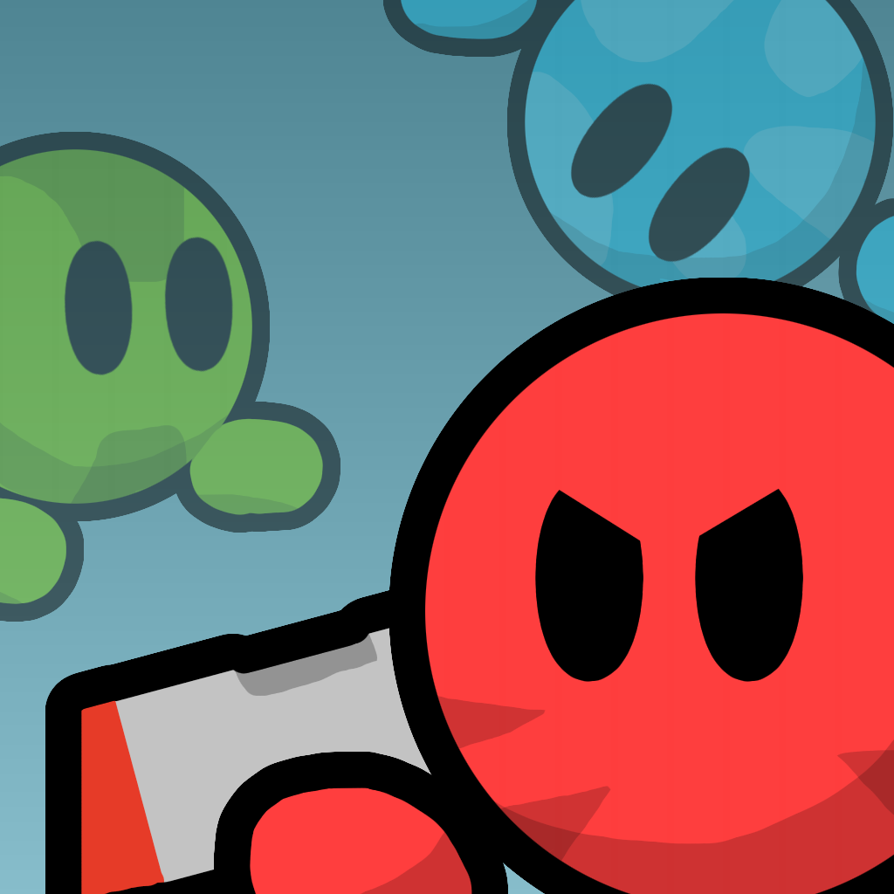
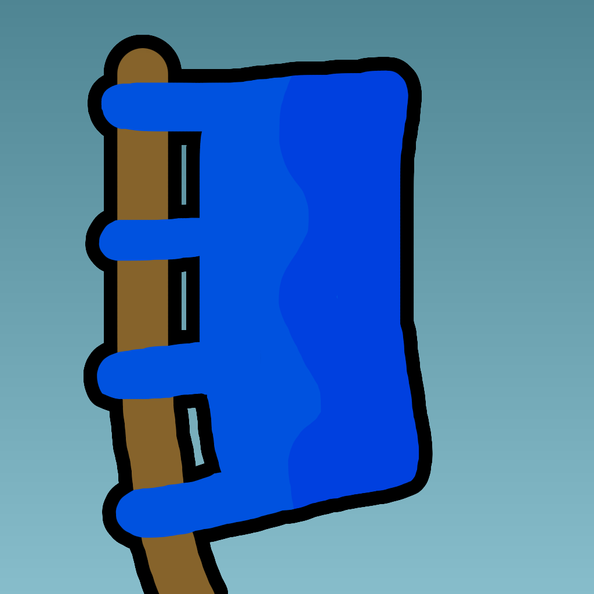

You may find the v0.9.0 versions on the github. Right now, there is also a 0.7-based version being worked on!
Features
Original Teeworlds gametypes!


DM, TDM, CTF, LMS, LTS!
And instagib variants!
Two brand new gametypes!

Hide and Seek
Seekers will try to kill the Hiders, Hiders need to run!

Hold the Flag
Hold the flag to gain points over time!